本項では、グラデーションツールについて学習します。
グラデーションを使えば画像に立体感や深みを出し、
グラデーションの設定を変更することでさまざまな効果を得ることもできます。
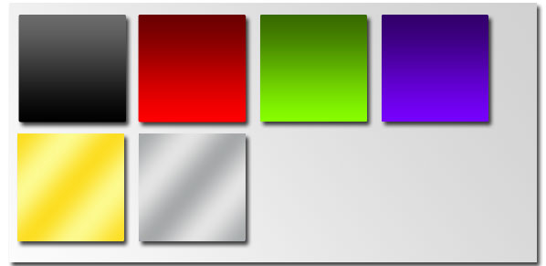
まずはあらかじめPhotoshopに登録されているグラデーションを使用してみましょう。
下記の設定で新規ファイルを作成します。
ファイル名を「グラデーション練習」とし、
プリセットより「Photoshop初期設定」を選択し、
単位を「pixel（ピクセル）」に設定します。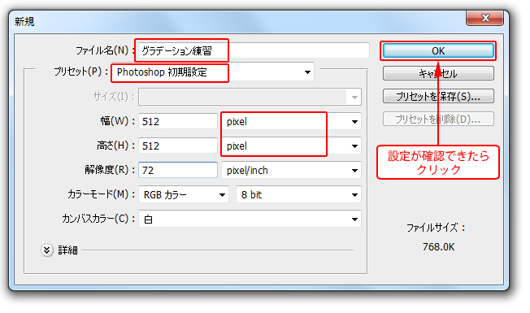
[ツールパネル]から[グラデーションツール]を選択します。
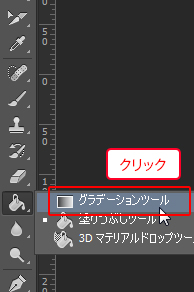
コントロールパネルから、[グラデーションピッカーを開く]をクリックします。
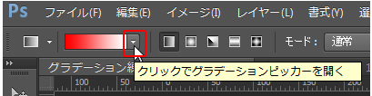
表示される一覧から「クロム」を選択します。
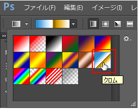
コントロールパネルから[線形グラデーション]を選びます。
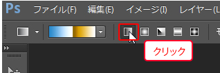
画面の左上から右下方向へドラッグします。
すると選択したグラデーションで描画されます。
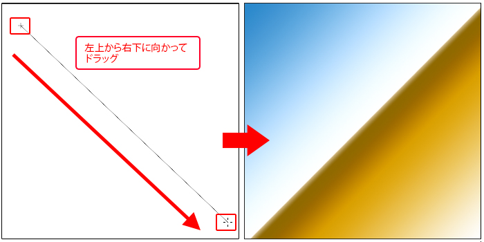
今度は画面中央付近で左上から右下の方向にドラッグしましょう。
ドラッグした距離や方向によって、描画されるグラデーションの形状が変わります。
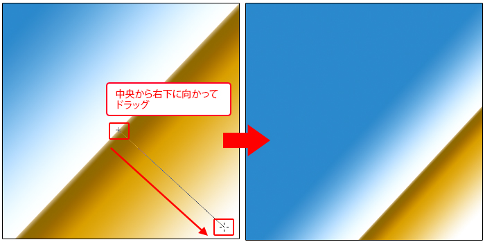
いろいろな方向でグラデーションを試してみてください。
操作が終わったら[ヒストリーパネル]から最初の状態に戻しておきましょう。
続いて、オリジナルのグラデーションカラーを作成してみましょう。
「赤・黄色・青」と変化するオリジナルのグラデーションを作成します。
コントロールパネルの[グラデーションを編集]をクリックします。
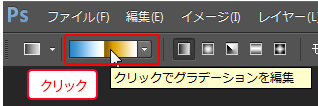
「グラデーションエディター」ダイアログボックスが表示されます。
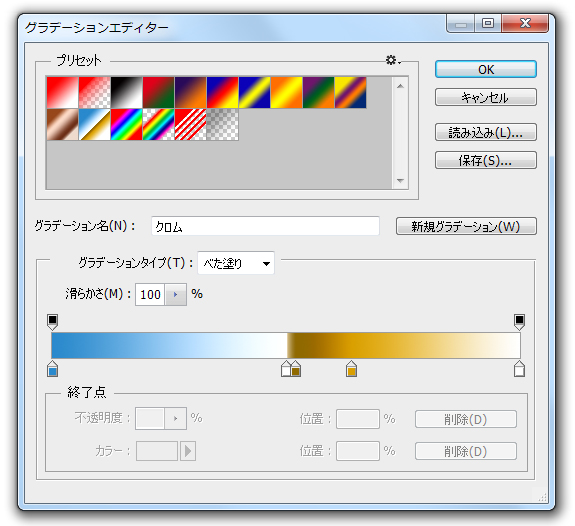
[プリセット]から「黒、白」のグラデーションを選択します。
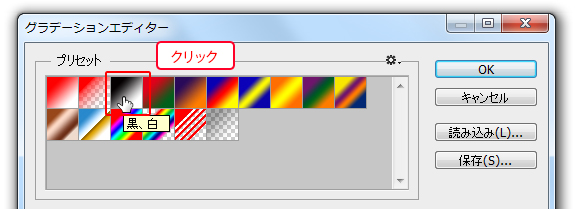
グラデーションのカラーは、グラデーションバー下部にある
[カラー分岐点]から変更できます。
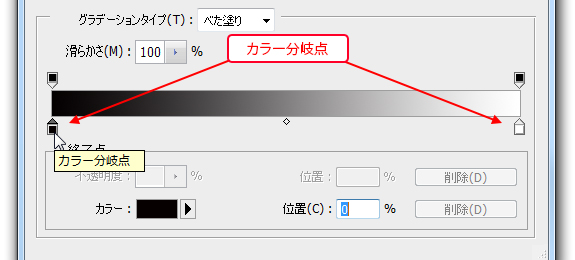
左側の黒いカラー分岐点をクリックして選択し、
[終了点]にある「カラー」をクリックして選択します。
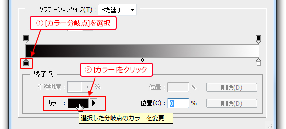
[カラーピッカー]が表示されますので、赤色にカラーを変更します。
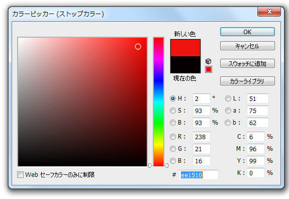
左側の[カラー分岐点]の色が変更されます。
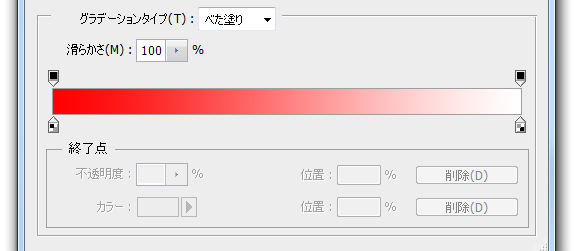
同様に右側の[カラー分岐点]を青色に変更してみましょう。
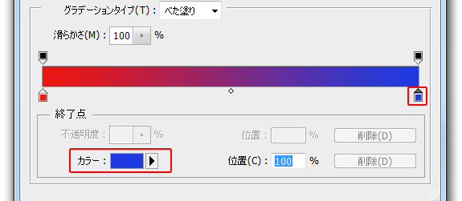
[カラー分岐点]は自由に追加・削除できます。
グラデーションバー下部の任意の位置をクリックすると、
新しい[カラー分岐点]が追加されます。
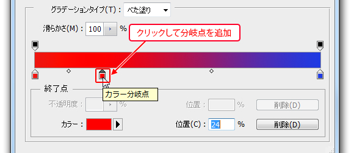
追加した分岐点は、下へドラッグすることで削除できます。
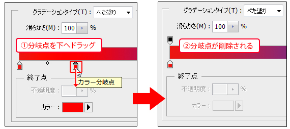
グラデーションバーの中間あたりに[カラー分岐点]を追加し、
カラーを黄色に設定してみましょう。
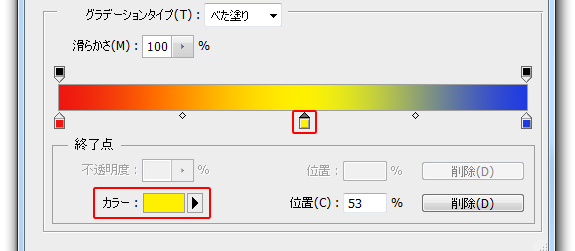
作成したグラデーションは名前を付けて保存することで、再設定をする必要がなくなります。
まず[グラデーション名]に「練習用」と名前を入力し、
[新規グラデーション]をクリックします。
すると、[プリセット]に名前を付けたグラデーションが追加されます。
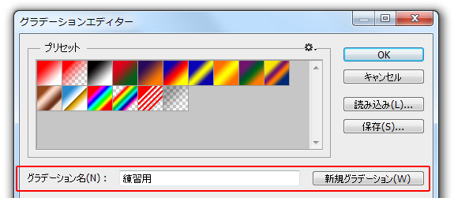
設定が完了したら[OK]ボタンを押し、[グラデーションエディター]を閉じ、
作成したグラデーションを描画します。
画面の左上の隅から右下の隅にドラッグしましょう。
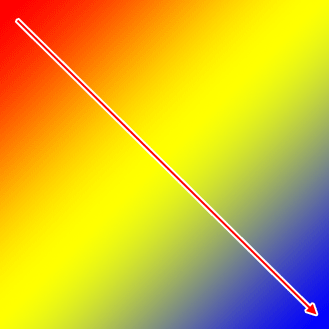
グラデーションが描画できたら、
先ほど追加したグラデーションを削除しましょう。
[グラデーションエディター]を開き、追加したグラデーションを右クリックし、
表示されるメニューから[グラデーションを削除]を選択します。
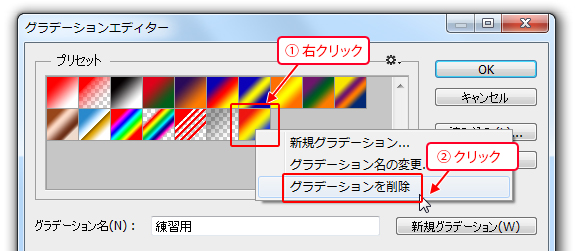
ファイルは閉じずに進みましょう。
グラデーションのカラー設定では、透明度を設定することができます。
[グラデーションエディター]を表示しましょう。
[プリセット]から「黒、白」のグラデーションを選択します。
右端のカラー分岐点を選択し、「黒色」に変更します。
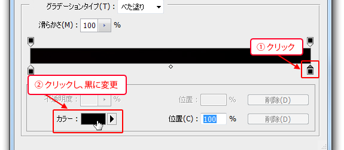
グラデーションバーの上部にある右側の[不透明度の分岐点]をクリックします。
すると、 [終了点]エリアに不透明度が表示されます。
[不透明度]を《0％》に設定します。
不透明度が設定され、透明グリッドが表示されます。
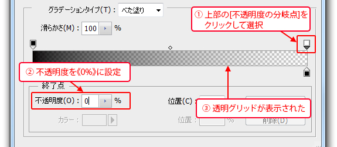
[OK]ボタンをクリックし、グラデーションエディターを終了します。
先ほどの画像の上から、不透明度を設定したグラデーションを描画します。
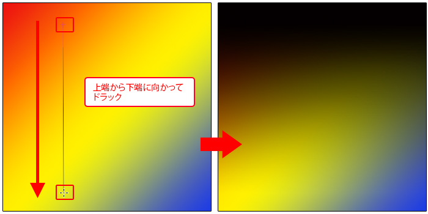
不透明度が設定されたので、最初に描いたグラデーションが透けて描画されます。
以上でこの節の学習は終了です。
ファイルは閉じて次の節へ進んでください。